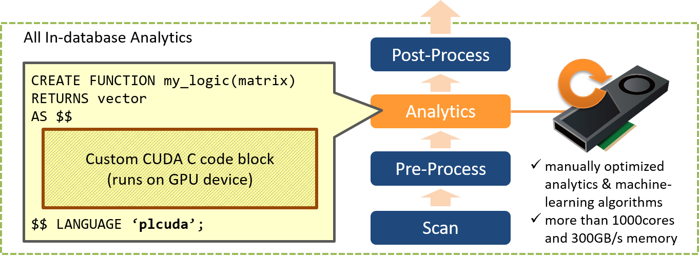

This chapter introduces the way to implement GPU executable native program as SQL functions, using PL/CUDA procedural language.
PL/CUDA Overview
PG-Strom internally constructs GPU programs by CUDA language, according to the supplied SQL, then generates GPU's native binary using just-in-time compile. CUDA is a programming environment provided by NVIDIA. It allows implementing parallel program which is executable on GPU device, using C-like statement. This transformation process from SQL statement to CUDA program is an internal process, thus, no need to pay attention what GPU programs are generated and executed from the standpoint of users.
On the other hands, PostgreSQL supports to add programming language to implement SQL functions by CREATE LANGUAGE statement. PL/CUDA is a language handler to supports CREATE LANGUAGE command. It also allows users to run arbitrary GPU programs manually implemented as SQL functions, but not only GPU programs automatically generated by PG-Strom based on SQL.
Its argument can take the data types supported by PG-Strom, like numeric, text, or array-matrix data type. These arguments are implicitly loaded onto GPU device memory by the PL/CUDA infrastructure, so users don't need to pay attention for data loading between the database and GPU devices. In a similar fashion, the return value of PL/CUDA function (including the case of variable length data type) will be written back to CPU from GPU, then decode to the result of SQL function.
You can also use foreign tables defined with gstore_fdw as arguments of PL/CUDA function. In this case, no need to load the data onto GPU for each invocation because foreign table already keeps the data, and available to use larger data than 1GB which is a restriction of variable length data in PostgreSQL.
Therefore, users can focus on productive tasks like implementation of statistical analysis, code optimization and so on, without routine process like data input/output between GPU and databases.

Once a PL/CUDA function is declared using CREATE FUNCTION, it generates a CUDA program source code that embeds the definition of this function, then build it for the target GPU device.
This CUDA program is almost identical to usual GPU software based on CUDA runtime, except for the auxiliary code to receive arguments of SQL function and to write back its results. It also allows to include/link some libraries for CUDA device runtime.
Native CUDA programs implemented by PL/CUDA are executed as child-processes of PostgreSQL backend. Therefore, it has independent address space and OS/GPU resources from PostgreSQL. CUDA program contains host code for the host system and device code to be executed on GPU devices. The host code can execute any logic we can program using C-language, so we restrict only database superuser can define PL/CUDA function from the standpoint of security.
Below is an example of simple PL/CUDA function. This function takes two same length real[] array as arguments, then returns its dot product in float data type.
CREATE OR REPLACE FUNCTION
gpu_dot_product(real[], real[])
RETURNS float
AS $$
#plcuda_decl
#include "cuda_matrix.h"
KERNEL_FUNCTION_MAXTHREADS(void)
gpu_dot_product(double *p_dot,
VectorTypeFloat *X,
VectorTypeFloat *Y)
{
size_t index = get_global_id();
size_t nitems = X->height;
float v[MAXTHREADS_PER_BLOCK];
float sum;
if (index < nitems)
v[get_local_id()] = X->values[index] * Y->values[index];
else
v[get_local_id()] = 0.0;
sum = pgstromTotalSum(v, MAXTHREADS_PER_BLOCK);
if (get_local_id() == 0)
atomicAdd(p_dot, (double)sum);
__syncthreads();
}
#plcuda_begin
{
size_t nitems;
int blockSz;
int gridSz;
double *dot;
cudaError_t rc;
if (!VALIDATE_ARRAY_VECTOR_TYPE_STRICT(arg1, PG_FLOAT4OID) ||
!VALIDATE_ARRAY_VECTOR_TYPE_STRICT(arg2, PG_FLOAT4OID))
EEXIT("arguments are not vector like array");
nitems = ARRAY_VECTOR_HEIGHT(arg1);
if (nitems != ARRAY_VECTOR_HEIGHT(arg2))
EEXIT("length of arguments mismatch");
rc = cudaMallocManaged(&dot, sizeof(double));
if (rc != cudaSuccess)
CUEXIT(rc, "failed on cudaMallocManaged");
memset(dot, 0, sizeof(double));
blockSz = MAXTHREADS_PER_BLOCK;
gridSz = (nitems + MAXTHREADS_PER_BLOCK - 1) / MAXTHREADS_PER_BLOCK;
gpu_dot_product<<<gridSz,blockSz>>>(dot,
(VectorTypeFloat *)arg1,
(VectorTypeFloat *)arg2);
rc = cudaStreamSynchronize(NULL);
if (rc != cudaSuccess)
CUEXIT(rc, "failed on cudaStreamSynchronize");
return *dot;
}
#plcuda_end
$$ LANGUAGE 'plcuda';
PL/CUDA infrastructure makes entrypoint function of CUDA program by the block between #plcuda_begin and #plcuda_end with extra code to exchange arguments of SQL function.
The portion enclosed by #plcuda_decl and #plcuda_begin is a block for declaration of GPU device functions and other host functions. It is placed prior to the entrypoint above.
At the entrypoint of the CUDA program, you can refer the arguments of SQL function using arg1, `arg2, and so on.
In the above example, the arg1 and arg2, real[] array type, are passed to the entrypoint, then VALIDATE_ARRAY_VECTOR_TYPE_STRICT macro checks whether it is 1-dimensional array of 32bit floating-point values without NULL.
Ditto with return value, the entrypoint returns a value in CUDA C representation corresponding to the SQL data type.
If entrypoint does not return any value (or, it exits the program with status code 1 by exit()), it is considered PL/CUDA function returns NULL.
The above sample program validates the array of real values passed from SQL function, then it allocates the result buffer by cudaMallocManaged, and invokes gpu_dot_product, a GPU kernel function, to compute dot product with two vectors.
The result of this function is below. It computes the dot product of two vectors which contain 10,000 items randomly generated.
postgres=# SELECT gpu_dot_product(array_matrix(random()::real),
array_matrix(random()::real))
FROM generate_series(1,10000);
gpu_dot_product
------------------
3.71461999509484
(1 row)
PL/CUDA Structure
Function declaration of PL/CUDA is consists of two code blocks split by the directives of #plcuda_decl, #plcuda_begin and #plcuda_end. Users can put their custom code on the code blocks according to the purpose, then PL/CUDA language handler reconstruct them into single source file with extra logic to exchange function arguments and results.
#plcuda_decl
[...any declarations...]
#plcuda_begin
[...host code in the entrypoint...]
#plcuda_end
The code block, begins from #plcuda_decl, can have declaration of __host__ and __device__ functions and variables for CUDA C.
This code block locates in front of the entrypoint function which contains the code block between #plcuda_begin and #plcuda_end at the source file eventually constructed.
If external header files are included using #include statement of CUDA C, put the statement on this code block.
The code block between #plcuda_begin and #plcuda_end is embedded to a part of entrypoint function. Therefore, it does not describe function name, arguments definition and so on.
Prior to execution of the code block, the entrypoint function receives arguments of the SQL function from PostgreSQL backend, and set up arg1, arg2, ... variables for further references.
These variables have the following CUDA C representation according to SQL data types.
| SQL data type | CUDA C data type | Examples |
|---|---|---|
reggstore |
void * |
OID of Gstore_fdw foreign table |
real |
float |
32bit floating point |
float |
double |
64bit floating point |
| Other inline data types | Datum |
int, date, ... |
| Fixed-length value by reference | void * |
uuid, ... |
| Variable-length value (varlena) | varlena * |
text, real[], ... |
PL/CUDA language handler constructs a single CUDA C source file from the code blocks above, then builds it once by nvcc compiler at declaration or execution time.
If it contains any #plcuda_include directive, its source code is not fixed until execution time, so built at the execution time only. In case when identical CUDA program is already pre-built, we can reuse it without rebuild.

When SQL command invokes PL/CUDA function, PL/CUDA language handler launch the pre-built CUDA program, then copies the arguments of SQL function over pipe. These are stored in the argument buffer of the CUDA program, so custom logic can refer them using arg1 or arg2 variables.
The data types by reference at CUDA C program, like variable-length datum, are initialized as pointers to the argument buffer. It is a managed memory region allocated by cudaMallocManaged(), these pointers are available without explicit DMA between host system and GPU devices.
Here is a special case if argument has reggstore type. It is actually an OID (32bit integer) of Gstore_Fdw foreign table, however, it is replaced to the reference of GPU device memory acquired by the Gstore_Fdw foreign table if it is supplied as PL/CUDA argument.
The argument is setup to the pointer for GstoreIpcMapping object. GstoreIpcMapping::map holds the mapped address of the GPU device memory acquired by the Gstore_Fdw foreign table.
GstoreIpcHandle::device_id indicates the device-id of GPU which physically holds the region, and GstoreIpcHandle::rawsize` is raw length of the region.
typedef struct
{
cl_uint __vl_len; /* 4B varlena header */
cl_short device_id; /* GPU device where pinning on */
cl_char format; /* one of GSTORE_FDW_FORMAT__* */
cl_char __padding__; /* reserved */
cl_long rawsize; /* length in bytes */
union {
#ifdef CU_IPC_HANDLE_SIZE
CUipcMemHandle d; /* CUDA driver API */
#endif
#ifdef CUDA_IPC_HANDLE_SIZE
cudaIpcMemHandle_t r; /* CUDA runtime API */
#endif
char data[64];
} ipc_mhandle;
} GstoreIpcHandle;
typedef struct
{
GstoreIpcHandle h; /* IPChandle of Gstore_Fdw */
void *map; /* mapped device pointer */
} GstoreIpcMapping;
PL/CUDA function can return its result using return of a CUDA C datum relevant to the SQL data type.
In case when no return clause is executed, NULL pointer is returned if CUDA C data type is pointer, or CUDA program is terminated with status code = 1 by exit(1), PL/CUDA function returns null to SQL.
PL/CUDA References
This section is a reference for PL/CUDA function's directives and related SQL functions.
Advantage and disadvantage of PL/CUDA
On invocation of PL/CUDA function, it launches the relevant CUDA program on behalf of the invocation, then CUDA program initialize per process context of GPU device. The series of operations are never lightweight, so we don't recommend to implement a simple comparison of scalar values using PL/CUDA, and use for full table scan on billion rows.
On the other hands, once GPU device is correctly initialized, it allows to process massive amount of data using several thousands of processor cores on GPU device. Especially, it is suitable for computing intensive workloads, like machine-learning or advanced analytics that approach to the optimal values by repeated calculation for example.
According to the growth of data size, we need to pay attention how to exchange data with CUDA program. PostgreSQL supports array types, and it is easy and simple way to exchange several millions of integer or real values at most.
However, variable-length datum of PostgreSQL, including the array-types, is restricted to 1GB at a maximum. We need to take a little idea to handle larger data, like separation of data-set. In addition, PostgreSQL backend process set up the argument of SQL functions in single thread, so it takes a certain amount of time to manipulate gigabytes-class memory object.
Please consider usage of Gstore_Fdw foreign-table when data size grows more than several hundreds megabytes. Once you preload the large data-set onto GPU device memory through Gstore_Fdw, no need to set up large arguments on invocation of PL/CUDA function. It also allows to keep larger data than gigabytes, as lond as GPU device memory capacity allows.
PL/CUDA Directives
#plcuda_decl
This directive begins a code block which contains CUDA C functions and variables with both of __host__ and __device__ attributes. PL/CUDA language handler copies this code block in front of the program entrypoint as is.
Use of this directive is optional, however, it makes no sense if here is no declaration of GPU kernel functions to be called from the entrypoint. So, we usually have more than one GPU kernel function.
#plcuda_begin
This directive begins a code block which consists a part of the entrypoint of CUDA program.
The CUDA program setup the referable arg1, arg2, ... variables according to the arguments of PL/CUDA function, then switch control to the user defined portion. This code block is a host code; we can implement own control logic working on CPU or heavy calculation by GPU kernel invocation.
Result of PL/CUDA function can be returned using return statement of CUDA C, according to the function definition.
#plcuda_end
It marks end of the kernel function code block. By the way, if a directive to start code block was put inside of the different code block, the current code block is implicitly closed by the #plcuda_end directive.
#plcuda_include <function name>
This directive is similar to #include of CUDA C, however, it injects result of the specified SQL function onto the location where the directive was written.
The SQL function should have identical arguments and return text data.
For example, when we calculate similarity of massive items, we can generate multiple variant of the algorithm on the fly that is almost equivalent but only distance definitions are different. It makes maintenance of PL/CUDA function simplified.
#plcuda_library <library name>
It specifies the library name to be linked when CUDA program is built by nvcc.
The <library name> portion is supplied to nvcc command as -l option.
For example, if libcublas.co library is linked, you need to describe cublas without prefix (lib) and suffix (.so).
Right now, we can specify the libraries only installed on the standard library path of CUDA Toolkit (`/usr/local/cuda/lib64).
#plcuda_sanity_check <function>
It allows to specify the sanity check function that preliminary checks adequacy of the supplied arguments, prior to GPU kernel launch.
No sanity check function is configured on the default.
Usually, launch of GPU kernel function is heavier task than call of another function on CPU, because it also involves initialization of GPU devices. If supplied arguments have unacceptable values from the specification of the PL/CUDA function, a few thousands or millions (or more in some cases) of GPU kernel threads shall be launched just to check the arguments and return an error status. If sanity check can be applied prior to the launch of GPU kernel function with enough small cost, it is a valuable idea to raise an error using sanity check function prior to the GPU kernel function. The sanity check function takes identical arguments with PL/CUDA function, and returns bool data type.
PL/CUDA Related Functions
| Definition | Result | Description |
|---|---|---|
plcuda_function_source(regproc) |
text |
It returns source code of the GPU kernel generated from the PL/CUDA function, towards the OID input of PL/CUDA function as argument. |
Support functions for PL/CUDA invocations
The functions below are provided to simplify invocation of PL/CUDA functions.
| Definition | Result | Description |
|---|---|---|
attnums_of(regclass,text[]) |
smallint[] |
It returns attribute numbers for the column names (may be multiple) of the 2nd argument on the table of the 1st argument. |
attnum_of(regclass,text) |
smallint |
It returns attribute number for the column name of the 2nd argument on the table of the 1st argument. |
atttypes_of(regclass,text[]) |
regtype[] |
It returns data types for the column names (may be multiple) of the 2nd argument on the table of the 1st argument. |
atttype_of(regclass,text) |
regtype |
It returns data type for the column name of the 2nd argument on the table of the 1st argument. |
attrs_types_check(regclass,text[],regtype[]) |
bool |
It checks whether the data types of the columns (may be multiple) of the 2nd argument on the table of the 1st argument match with the data types of the 3rd argument for each. |
attrs_type_check(regclass,text[],regtype) |
bool |
It checks whether all the data types of the columns (may be multiple) of the 2nd argument on the table of the 1st argument match with the data type of the 3rd argument. |
Array-Matrix Functions
This section introduces the SQL functions that supports array-based matrix types provided by PG-Strom.
- 2-dimensional Array
- Element of array begins from 1 for each dimension
- No NULL value is contained
- Length of the array is less than 1GB, due to the restriction of variable length datum in PostgreSQL
- Array with
smallint,int,bigint,realorfloatdata type
If and when the array satisfies the above terms, we can determine the location of (i,j) element of the array by the index uniquely, and it enables GPU thread to fetch the datum to be processed very efficiently. Also, array-based matrix packs only the data to be used for calculation, unlike usual row-based format, so it has advantaged on memory consumption and data transfer.
| Definition | Result | Description |
|---|---|---|
array_matrix(variadic arg, ...) |
array |
It is an aggregate function that combines all the rows supplied. For example, when 3 float arguments were supplied by 1000 rows, it returns an array-based matrix of 3 columns X 1000 rows, with float data type.This function is declared to take variable length arguments. The arg takes one or more scalar values of either smallint, int, bigint, real or float. All the arg must have same data types. |
matrix_unnest(array) |
record |
It is a set function that extracts the array-based matrix to set of records. array is an array of smallint, int, bigint, real or float data. It returns record type which consists of more than one columns according to the width of matrix. For example, in case of a matrix of 10 columns X 500 rows, each records contains 10 columns with element type of the matrix, then it generates 500 of the records. It is similar to the standard unnest function, but generates record type, thus, it requires to specify the record type to be returned using AS (colname1 type[, ...]) clause. |
rbind(array, array) |
array |
array is an array of smallint, int, bigint, real or float data. This function combines the supplied two matrices vertically. Both matrices needs to have same element data type. If width of matrices are not equivalent, it fills up the padding area by zero. |
rbind(array) |
array |
array is an array of smallint, int, bigint, real or float data. This function is similar to rbind(array, array), but performs as an aggregate function, then combines all the input matrices into one result vertically. |
cbind(array, array) |
array |
array is an array of smallint, int, bigint, real or float data. This function combines the supplied two matrices horizontally. Both matrices needs to have same element data type. If height of matrices are not equivalent, it fills up the padding area by zero. |
cbind(array) |
array |
array is an array of smallint, int, bigint, real or float data. This function is similar to cbind(array, array), but performs as an aggregate function, then combines all the input matrices into one result horizontally. |
transpose(array) |
array |
array is an array of smallint, int, bigint, real or float data. This function makes a transposed matrix that swaps height and width of the supplied matrix. |
array_matrix_validation(anyarray) |
bool |
It validates whether the supplied array (anyarray) is adequate for the array-based matrix. It is intended to use for sanity check prior to invocation of PL/CUDA function, or check constraint on domain type definition. |
array_matrix_height(array) |
int |
array is an array of either smallint, int, bigint, real or float data. This function returns the height of the supplied matrix. |
array_matrix_width(array) |
int |
array is an array of either smallint, int, bigint, real or float data. This function returns the width of the supplied matrix. |